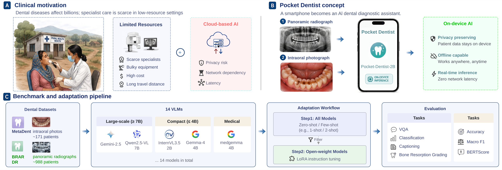
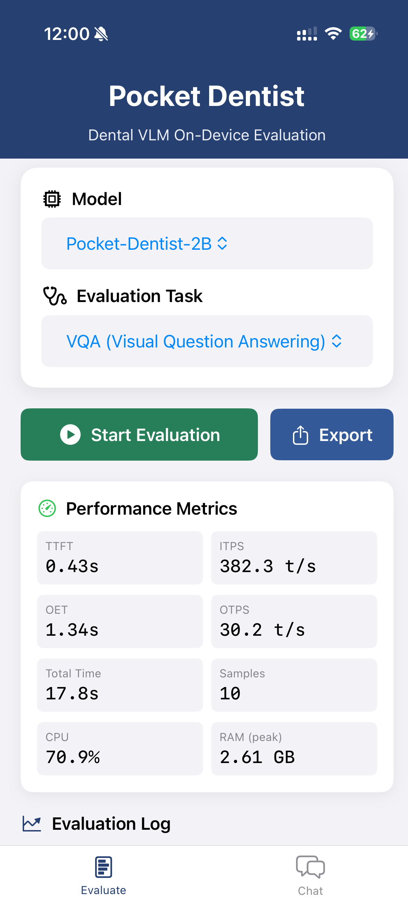

Abstract
Evaluations of dental vision–language models remain fragmented across datasets, task definitions and metrics, and often ignore their computational cost. This limits their widespread deployment for dental screening outside specialist centres, where timely inference, limited hardware, and local handling of patient images are vital for practical, privacy-preserving clinical prescreening. Here we present Pocket-Dentist, an efficiency-aware benchmark for dental multimodal question answering that brings together three datasets spanning ~1,159 patients (from BRAR and MetaDent), five task types and seven metrics. Across 14 typical VLMs, our results reveal an interesting observation: compact VLMs (e.g., 2B-parameter models) become competitive with much larger VLMs on most metrics after lightweight adaptation while requiring substantially lower computational costs in dental image understanding. Deployed locally on an iPhone 17 Pro, our finetuned compact VLM Pocket-Dentist-2B processed each sample in 4.31s, reducing latency by 4.9× and memory use by 2.3× compared with a 7B baseline.
Pocket-Dentist Pipeline

Figure 1. Overview of the Pocket-Dentist pipeline. We benchmark 14 VLMs across three dental datasets under zero-shot, few-shot, and LoRA settings, identify InternVL3.5-2B as the best-performing compact VLM, and deploy it on an iPhone 17 Pro for on-device local inference.
Datasets
- BRAR — Multimodal panoramic radiographs for periodontal bone resorption grading. Xia et al., Scientific Data (2025)
- MetaDent — Expert-labeled intraoral photographs for vision–language models in dentistry. Li et al., Journal of Dental Research (2026)
- DR — Community-contributed collection of panoramic dental X-rays. Dental Radiography Dataset, Kaggle (2023)
Zero-Shot Results
Bold blue = best across all models · underlined = second-best · all metrics ↑ higher is better.
| Tier | Model | BRAR Acc | BRAR F1 | DR F1 | DR Acc | Meta VQA | Meta Cap | Meta Cls |
|---|---|---|---|---|---|---|---|---|
| Large VLMs (≥7B) |
Lingshu-32B | 0.490 | 0.392 | 0.380 | 0.082 | 0.660 | 0.196 | 0.325 |
| MedMO-8B-Next | 0.255 | 0.191 | 0.210 | 0.041 | 0.387 | 0.135 | 0.056 | |
| Qwen2.5-VL-7B | 0.255 | 0.160 | 0.217 | 0.014 | 0.620 | 0.200 | 0.184 | |
| gemini-2.5-flash | 0.456 | 0.411 | 0.317 | 0.178 | 0.729 | 0.194 | 0.412 | |
| gpt-4o-mini | 0.557 | 0.239 | 0.123 | 0.041 | 0.600 | 0.242 | 0.286 | |
| Mean | 0.403 | 0.279 | 0.249 | 0.071 | 0.599 | 0.193 | 0.253 | |
| Compact VLMs (≤4B) |
Qwen3-VL-4B | 0.436 | 0.369 | 0.100 | 0.014 | 0.620 | 0.232 | 0.298 |
| gemma-4-E4B-it | 0.557 | 0.239 | 0.270 | 0.219 | 0.580 | 0.168 | 0.254 | |
| InternVL2.5-4B | 0.295 | 0.195 | 0.078 | 0.027 | 0.520 | 0.166 | 0.116 | |
| medgemma-4b-it | 0.443 | 0.330 | 0.350 | 0.068 | 0.660 | 0.168 | 0.139 | |
| paligemma2-3b-mix-448 | 0.086 | 0.053 | 0.000 | 0.000 | 0.000 | 0.000 | 0.000 | |
| SmolVLM2-2.2B | 0.544 | 0.292 | 0.000 | 0.000 | 0.000 | 0.100 | 0.158 | |
| InternVL3.5-2B | 0.537 | 0.259 | 0.287 | 0.082 | 0.560 | 0.173 | 0.187 | |
| gemma-4-E2B-it | 0.564 | 0.240 | 0.000 | 0.000 | 0.640 | 0.140 | 0.190 | |
| InternVL3.5-1B | 0.228 | 0.219 | 0.317 | 0.178 | 0.520 | 0.149 | 0.146 | |
| Mean | 0.410 | 0.244 | 0.156 | 0.065 | 0.456 | 0.144 | 0.154 |
Table 2. Zero-shot performance on BRAR, DR, and MetaDent. No single model dominates across all tasks — zero-shot evaluation alone is not a reliable basis for dental deployment.
LoRA Fine-Tuning Results
Uniform low-cost adaptation budget (r=16, α=32, 3 epochs). Bold blue = best · underlined = second-best.
| Tier | Model | BRAR Acc | BRAR F1 | DR F1 | DR Acc | Meta VQA | Meta Cap | Meta Cls |
|---|---|---|---|---|---|---|---|---|
| Large VLMs (≥7B) |
Lingshu-32B | 0.584 | 0.497 | 0.651 | 0.507 | 0.920 | 0.244 | 0.000 |
| MedMO-8B-Next | 0.174 | 0.099 | 0.219 | 0.288 | 0.820 | 0.252 | 0.000 | |
| Qwen2.5-VL-7B | 0.564 | 0.421 | 0.605 | 0.521 | 0.840 | 0.237 | 0.101 | |
| Mean | 0.441 | 0.339 | 0.492 | 0.439 | 0.860 | 0.244 | 0.034 | |
| Compact VLMs (≤4B) |
Qwen3-VL-4B | 0.570 | 0.549 | 0.636 | 0.603 | 0.820 | 0.226 | 0.116 |
| gemma-4-E4B-it | 0.550 | 0.423 | 0.759 | 0.712 | 0.880 | 0.262 | 0.343 | |
| InternVL2.5-4B | 0.523 | 0.521 | 0.536 | 0.521 | 0.820 | 0.271 | 0.287 | |
| medgemma-4b-it | 0.624 | 0.439 | 0.561 | 0.479 | 0.780 | 0.261 | 0.246 | |
| paligemma2-3b-mix-448 | 0.000 | 0.000 | 0.000 | 0.000 | 0.556 | 0.094 | 0.168 | |
| SmolVLM2-2.2B | 0.537 | 0.508 | 0.395 | 0.260 | 0.780 | 0.277 | 0.331 | |
| InternVL3.5-2B ★ | 0.651 | 0.633 | 0.732 | 0.699 | 0.820 | 0.286 | 0.316 | |
| gemma-4-E2B-it | 0.174 | 0.099 | 0.687 | 0.644 | 0.820 | 0.225 | 0.335 | |
| InternVL3.5-1B | 0.517 | 0.490 | 0.730 | 0.712 | 0.800 | 0.275 | 0.284 | |
| Mean | 0.461 | 0.407 | 0.560 | 0.514 | 0.786 | 0.242 | 0.255 |
Table 3. LoRA instruction-tuning across all 12 open-weight models. ★ InternVL3.5-2B (2B) achieves the best BRAR Acc/F1 and MetaDent captioning among all open-weight models, matching or outperforming 7B–32B models on 4 of 5 primary metrics. Closed-source APIs are excluded here as their weights are unavailable for adaptation.
On-Device Deployment
LoRA-tuned VLMs deployed on an iPhone 17 Pro (A19 Pro, 12 GB Unified Memory) via
llama.cpp Metal-accelerated inference (GGUF Q4_K_M). 100% local — no network.
| Model | TTFT (s) ↓ | OTPS (t/s) ↑ | Total (s) ↓ | RAM (GB) ↓ |
|---|---|---|---|---|
| Pocket-Dentist-2B | 0.76 | 30.58 | 4.31 | 2.62 |
| InternVL2.5-4B | 1.64 | 21.09 | 6.58 | 3.08 |
| Qwen2.5-VL-7B | 4.88 | 9.17 | 21.13 | 6.03 |
Table 4. On-device efficiency on iPhone 17 Pro (MetaDent, N=30). Pocket-Dentist-2B = InternVL3.5-2B + LoRA.

Key Findings
- Zero-shot fragmentation — No single VLM dominates across all dental tasks; zero-shot evaluation alone is unreliable for deployment decisions.
- LoRA adaptation closes the gap — Under a uniform low-cost budget, compact VLMs become competitive with much larger open-weight models on most metrics.
- InternVL3.5-2B is the strongest compact model — It matches or outperforms 7B–32B open-weight models on 4 of 5 primary metrics after LoRA.
- Pocket-Dentist-2B runs locally — 4.31s latency and 2.62 GB RAM, 100% offline on an iPhone 17 Pro (4.9× faster, 2.3× lighter than the 7B baseline).
- Medical pre-training ≠ dental performance — Biomedical-pretrained models (medgemma, paligemma2) do not consistently beat general-purpose models after dental-domain LoRA.
- Reliability matters — Some larger models suffer format collapse (classification F1=0) under the uniform budget, wasting the same compute as correct outputs.
BibTeX
@misc{bian2026pocketdentistondevicedentalimage,
title={Pocket-Dentist: On-Device Dental Image Understanding via Efficient Multimodal Large Language Models},
author={Kai Bian and Xucheng Guo and Bin Chen and Lingyan Ruan and Yiran Shen and Ting Dang and Hong Jia},
year={2026},
eprint={2605.29299},
archivePrefix={arXiv},
primaryClass={cs.CV},
url={https://arxiv.org/abs/2605.29299},
}